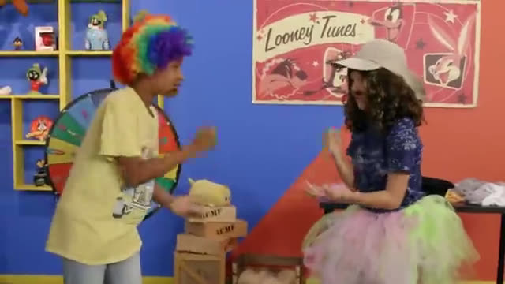
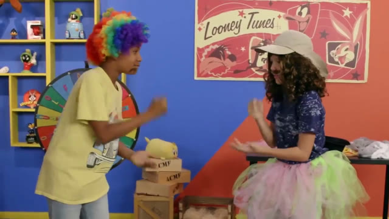

Every frame verified before a dollar moves
AI runs on video, and most of it is bought by the hour and never checked. Provena Gate is the checkpoint. It fingerprints every clip, searches 163 million frames in seconds, catches the copies a human would miss, even cropped or mirrored ones, and lets an AI agent settle the invoice inside rules it can’t break.

delivered
public datasetWe fingerprinted the datasets AI video is built on
We mapped the 300 most-downloaded video datasets on Hugging Face, then fingerprinted five of the biggest, frame by frame, on our own C++ engine. Every delivery is checked against all of it.
OpenVid-1M
Text-to-video generationLLaVA-Video-178K
Video understandingVript
Video captioningShareGPT4Video
Video captioningVideoChat3-LV116k
Long-video chatFingerprints only: no video is stored. Coverage per dataset is 84–100% of its files. The OpenVid-1M audit compared all of its 1M clips against each other on rented cloud machines for about $10.
Bought by the hour. Checked by no one.
Every duplicate hour is money burned and a model trained on the same footage twice. Today the “check” is a person scrolling through a folder.
The same clip twice
One recording delivered again, renamed or re-encoded.
Copies of footage you own
Cropped, mirrored, recoloured or trimmed versions of clips you already bought.
Sold to someone else
“Exclusive” footage that another buyer already paid for.
From a public dataset
Clips lifted from free AI training sets and sold as new.
Where training data comes from is about to matter a lot
The lawsuits are here
Creators are suing AI companies over scraped video. Buyers need to know exactly what they bought and where it came from.
Regulators want receipts
The EU AI Act’s training-data rules apply from August 2026. “We didn’t check” stops being an answer.
The buying is exploding
Robotics and world-model labs are starting to buy real-world video at a scale no human team can review by hand.
Crop it. Flip it. Stamp a logo on it. It still gets caught.
The oldest trick in reselling footage is to change it just enough to slip past a simple check. Provena Gate reads what’s actually in the frame, so the trick stops working.
Exclusive finally means exclusive
Buyers pay a premium for footage nobody else has. Now a recut, reframed copy sold to someone else shows up too.
Gaming it stops paying
When a crop or a flip no longer hides a resold clip, selling the same footage twice stops being worth the risk.
Two levels of proof
An exact match is a confirmed copy. A match that survives the edits is a likely copy, laid out frame by frame for a person to confirm.
From delivery to settled invoice in under a minute
Fingerprint
Two fingerprints per clip: one exact, one that survives edits. The video itself is never kept.
Match
Compared with your library, other buyers who opted in, and 1.6 million public clips.
Fixed rules
Plain rules decide what may be held and what a person must look at.
Claude reviews
Decides inside those rules, explains why, and asks a person when unsure.
Watch it catch what a human would miss
A replay of a real run of the app. The matches, frames, money and Claude’s words are exactly what it produced. The vendor and names are made up, and most clips are test footage; one is a real public-dataset video we shrank and compressed.
Autonomous where it’s safe. Human where it matters.
It makes real decisions, explains every one, and stays inside rules written in code that it can’t touch.
Unclear cases go to a person
Weak matches, still footage and likely edited copies are never held automatically, so honest contributors don’t lose pay.
Only a person releases payment
Claude can hold or escalate. Paying out stays a human decision.
Other buyers stay private
Buyers compare fingerprints only if they opt in, and never see each other’s footage.
Every step is logged
What the rules decided, what Claude looked at and chose, what a person changed.
Works without the AI
If Claude is unavailable, the rules’ decision stands and disputes go to a person.
Money is done in code
Claude never adds up amounts. Each second counts once, and overbilling is held.